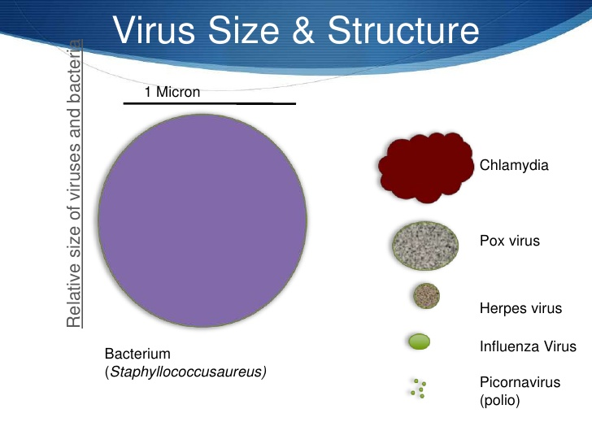
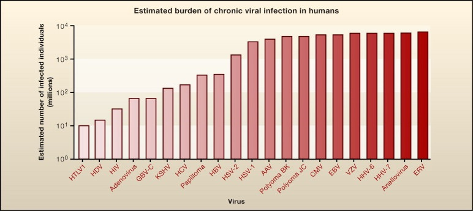
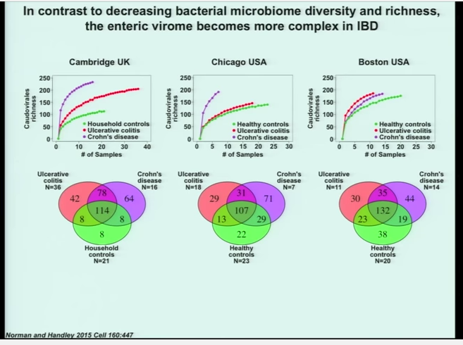

Chapter 5 Go Further
Once you’ve appreciated the importance of the microbiome and its affect on health and more, you may want to expand your knowledge beyond the scope of this book.
5.1 Beyond Bacteria:
While technically the microbiome refers to all microbes in and around us, most of the everyday usage of that term is limited to bacteria. But bacteria aren’t the only microbes in you, and it’s possible that they aren’t even the most important. There are fungi, of course, and perhaps other too-tiny-to-see lifeforms like protozoa, but one large class of microbes appears to have a major effect on us but is rarely studied: viruses.
Viruses present several problems for scientists. They’re super-tiny for one: you can often fit hundreds of virus-sized particles inside a single bacterium. They’re not always made of DNA, and even when they are, they don’t reproduce on their own.The controversy about whether they should even be considered “alive” is partly due to this lack of reproduction ability, but also because many of them appear to be quite simple: just a sequence of proteins.

These characteristics wreak havoc with the traditional scientists’ toolkit for dealing with small objects: they’re too small to study optically without powerful equipment, and their lack of a reproductive mechanism means you can’t easily amplify their quantity, and their RNA components are unstable and difficult to work with. It’s so much easier to deal with bacteria.
But thanks to some ingenious and difficult work, a few things are clear.
Viruses, like bacteria, are everywhere. In fact, just about every human on earth is infected, right now, with dozens of them.

A virus that circulates in your body is considered “latent” if you appear to be none the worse for it, but it’s hard to tell if that’s ultimately good or bad. Humans have been studying viruses for only a few decades, but viruses have been studying us for, well, forever. The chromosomes of virtually every organism on earth shows the tell-tale signs of viral interference.
Latent viruses may not cause any obvious symptoms, but they continue to hijack cells, vigorously making copies of themselves, inhabiting every nook and cranny of the body while waiting for something to happen. In mice, and presumably humans, it’s been shown that a particular type of listeria infection is inhibited when a formerly-latent virus gets word that the bacterium is in the body. The listeria pathogen ordinarily causes terrible disease symptoms, but in the presence of a latent herpes virus, nothing happens.
The nasty helminth worm, scourge of the tropics and an enemy of humans since time immemorial, actually wakes up the latent herpes virus, which has a sensor fine-tuned to detect it, in turn causing another reaction that will shut down the helminth again. If the virus is not present, guess what: the worm goes about its awful parasitical business; but with the virus, nothing happens. So which is worse: herpes virus or a helminth infection? Best, apparently, is to have both. Trouble awaits the body who has only one or the other.
This is true all over evolution and it may explain why some studies are frustratingly hard to reproduce. An experiment that works in one lab, with the same type of animal with the same food, doesn’t work in another lab, no matter how carefully they try to make the experiments identical. Maybe the only difference is that one location happens to have a geographically-specific virus lurking about, and that is just enough to activate a cascade of reactions that nullifies the experiment. What a pain.
Much popular microbiome advice suggests that more diversity is better, and intuitively it makes sense that a body with a variety of different microbes has a more robust defense system than somebody with a more restricted microbiome. Whether this is always true among bacteria is open for debate — I for one think it matters a lot which microbes you have, rather than the variety alone — but in the virome there is evidence that more diversity causes more problems.

IBD and Crohn’s patients who were carefully studied alongside healthy controls appear to have a wider variety of viruses in their systems. It’s too early to say whether this has any implications for treatment, but it does point out that the story is more complicated than we’d hope.
In fact, if you’re not super careful to control for the variety and types of viruses present, it could be that taking a probiotic could be harmful. Your body may have a perfectly good reason that a particular, otherwise beneficial microbe is missing or lower in quantity than in comparable healthy people. Introducing a bacterium that reacts with a latent virus could actually cause more harm than good.
There’s no solid evidence for this yet, but if true, it points in the same disturbing direction for treatment that we’ve been afraid to admit all along: the best way to treat any disease is through ordinary food. Don’t go messing with microbes unless you know what you’re doing.
5.2 Fermented Food
Here are a few things to try:
- Fermented and pickled food
- Raw milk
People have been fermenting food since the distant past, making everything from beer to cheese. Fermentation is an ideal way to preserve food beyond the date at which it is practical to eat.
Fermenting your own foods is surprisingly easy.
5.2.1 Yogurt
One of the easiest ferments is home-made yogurt. Pour a few cups of whole milk into a saucepan and heat to not-quite-boiling. You’ll need to get it above 160 degrees, the temperature that kills bacteria in milk, but if it goes all the way to boiling the milk will taste scalded. Even that’s not the end of the world, but you may as well try to keep it under that. Use a kitchen thermometer the first few times if you like, but soon you’ll be able to tell intuitively because you’ll see steam rising from the surface of the milk, but no boiling bubbles.
After the milk has been heated, remove and pour it into a glass bowl. Let it sit until it cools to about 110 degrees. Here, a kitchen thermometer is more useful, especially the first time because the exact temperature is more important. Warmer than 110 degrees and the lactobacillus yogurt bacteria will die; too much lower and they won’t grow. Once you have the hang of it, you’ll be able to tell based on the touch: it’ll feel unpleasantly warmer than your hand (which should be 98 degrees) but not too warm to touch. Once the milk hits that rough temperature zone, pour in a tiny amount of yogurt from another source. This is called the “starter” yogurt and the best is to use a bit of leftover from your previous batch, but for your first attempt you can use any commercially-purchased yogurt. Sweetened, flavored, non-fat — any kind is okay as long as it has live cultures in it.
Be sure not to use too much yogurt. Definitely no more than a tablespoon, and perhaps even just a teaspoon or two. Because of the small amounts, you’ll be tempted to think you need more, but in this case more is definitely not better. Too much starter will suffocate the mixture. Whenever I’ve had an unsuccessful batch it’s almost always due to having too much starter.
Mix the starter thoroughly into the lukewarm milk and then cover it up and put it someplace warm. The key is to keep the mixture close to that magical 110 degree point. Some people put it overnight in an oven set to the lowest temperature, but if you don’t like running the oven overnight you can try wrapping it tightly with something that will retain the heat through the night. If have a high-quality thermos-style cooler, you can set it inside there, and some people cover it with thick towels and set it in the warmest part of the house. Another option is to use a heating pad, set to the lowest setting and placed underneath the bowl. The important thing is to keep the mixture at the warm temperatures that the bacteria need in order to breed.
Set in a quiet place for about 8-10 hours. Overnight is ideal. When you open the bowl again, you’ll find the mixture no longer resembles milk, but has been transformed into a much thicker consistency — a yogurt. It will taste sour, and if you’re not accustomed to plain, unsweetened yogurt you may even think that is has spoiled. Nope, that’s just how pure, real yogurt is meant to taste.
5.2.2 Pickling
The next step after yogurt-making is also easy. It takes a little longer, from one to several weeks, but lets you expand your fermentation skills to many more foods. The most basic one is cabbage, to make your own sauerkraut.
Think of fermentation as a type of farming, only instead of large plants that you see, you’re farming with invisible microbes. In both cases the object is to start with a small seed that grows into a full crop. For sauerkraut, the microbes are naturally occurring on the leaves of plants and vegetables. You just need to put them into the right environment so the microbes can grow. Start with a small head of cabbage and a grater. If you don’t have a grater, then just chop it into small pieces. Cabbage is already covered with tiny microbes, but the interesting ones will not reproduce in the presence of oxygen; you need to get them out of the air. The best way to do that is to submerge them in a liquid — in this case we’ll use the naturally occurring water inside the cabbage leaves themselves. The purpose of grating or chopping is simply to let the water escape from the leaves until it covers the entire mixture.
You’ll need some type of container to submerge the leaves. Best is something made of glass or ceramic, though any container is fine as long as it doesn’t react with the acids that will be produced by the microbes. A standard mason jar works, for example, or even a cleaned-out jar of pasta sauce. Make sure you have a lid for the container, and make sure the lid doesn’t close too tightly. If you use something with a screw-top lid (like a pasta sauce jar) just pop a few tiny holes in the lid. The microbes will be producing carbon dioxide as they ferment, and you’ll need a way for the gases to leave or the container will explode.
Begin packing the cabbage leaves into the container as tightly as possible. While doing this, most people add some salt. The salt serves two purposes; it adds flavor, and it helps draw more water out of the plant. Just a small amount of salt is enough: about what you would use if you were seasoning it for flavor: a few shakes on each cabbage leaf as you peel it is enough, or maybe a total of a tablespoon or two for a small head of cabbage. Continue to pile more leaves into the container until it is full.
If you’re doing everything correctly, there will be a nice layer of liquid that completely covers the leaves in the container. Remember that the microbes can’t reproduce if there is air, so covering with liquid is essential. If you see any green leaves poking out of the liquid, pack them down further. It may help to find an insert of some kind to place directly over the leaves, perhaps anthe lid to a smaller sized jar, one that fits inside the container and lets you squish the leaves even tighter. The key is to keep everything submerged in liquid.
Put as many cabbage leaves as you can into the container and close the lid, but be careful: the bacteria in the jar will soon start to produce carbon dioxide gas, which will put pressure on the container. That’s the reason for the air holes you poked in the lid beforehand. You may want to cover the entire jar with a loose-fitting piece of cellophane, or an old cloth, as a precaution in case the aroma begins to attract insects.
That’s it! Leave the fermenting jar in a cool, undisturbed place and then check on it for the first few days. Make sure the liquid has entirely submerged the cabbage leaves. Within a day or two you’ll also notice some air bubbles in the liquid — the sign that the fermentation has begun to work. Now, just let the jar rest for another several days or more. The longer it sits, the more acidic it will become. If you like a sour taste, let it sit for a week or two, maybe even up to a month or more. If you want a more subtle flavor, take it out in a few days. Feel free to sniff the jar every day or two to decide when you think it’s ready.
When finished, it will look and smell like sauerkraut. If some of the leaves were not entirely submerged in liquid, it’s possible that a layer of moldy fungus has appeared, unsightly but not a problem. Just scrape off whatever doesn’t look like sauerkraut and eat the rest.
5.2.3 What’s happening in sauerkraut
The transformation from cabbage leaves to sauerkraut happens thanks to a complex interaction of bacteria starting with some members of the Leuconostoc species that occur naturally on the cabbage leaves. These are anaerobic organisms — they can’t live in oxygen. When submerged in the cabbage liquid, however, they thrive, consuming all the sugars they can find and converting them to lactic acid, giving off carbon dioxide as a byproduct. You’ll know the reaction is occurring when you spot tiny bubbles at the surface of the liquid a few hours after beginning the reaction.
Sadly for the Leuconostoc, they are too good at what they do. Eventually they’ll consume all of the sugars they find transforming the liquid into a sour concoction, and as result the environment turns too acidic for them and they die.
By then, the conditions have become ideal for another species, lactobacillus, which was pretty much designed for acidic liquids, and they finish off the remaining sugars, until the acidic level reaches PH=3, at which point their work is done. Fortunately for humans, the pathogens that could cause us harm are unable to survive in this high-acidic environment, and would be out-competed by the existing microbes anyway, so the final mixture is perfectly healthy.
5.2.4 More fermentation
Just about any food can be fermented, as people in all cultures have known since pre-history. Many common ethnic foods, such as miso (soybean) or kimchee (cabbage), are possible only thanks to fermentation. When you eat “cured” bacon or sausage, you are eating something that resulted from a complex interaction between microbes and meat.
[other inspired by Gerard Mullin:
5.2.5 Pickled Ginger
- 1 tsp whole cloves
- 1/4 tsp salt
- 1/2 pound fresh ginger, thinly sliced
cover with water and leave on the counter for 3-7 days
5.2.6 Pickled cucumbers
• 2 TB chopped dill
• 2 cloves minced garlic
• 1 tsp mustard seeds
• 1/4 tsp salt
• 1/2 pound cucumbers in 1/2" slicesfill with water, cover with a cloth and leave for 3-7 days
5.3 Annotated References
This is a new field, so much of the written literature remains in academia, but hopefully the following summary of items to read will be helpful.
Here are my suggestions for additional reading.
5.3.0.1 Twitter
My list of people who regularly write interesting comments about the microbiome is here:
5.3.0.3 Magazine Articles
GERMS ARE US Bacteria make us sick. Do they also keep us alive? BY MICHAEL SPECTER
http://www.newyorker.com/reporting/2012/10/22/121022fa_fact_specter?currentPage=all
Read more about Toxoplasma Gondii
The Atlantic: How Your Cat Is Making You Crazy (Feb 6, 2012)
http://www.theatlantic.com/magazine/archive/2012/03/how-your-cat-is-making-you-crazy/308873/
5.3.0.4 Web Sites
http://www.microbiomedigest.com/ A daily digest of scientific microbiome papers, by Elisabeth Bik Twitter: @microbiomdigest
5.3.0.5 Podcasts
Gut Guardians by Grace Liu and Matt Peppin
5.3.0.6 Courseware
Gut Check: Exploring Your Microbiome from Coursera
5.3.0.7 Software
Wild Fermentation: The Flavor, Nutrition, and Craft of Life Culture Foods by Sandor Katz
The Paleo Manifesto: Ancient Wisdom for Lifelong Health by John Durant
The best summary so far of the motivation and principles of ancestral health. The author is a student of Steven Pinker’s, from Harvard, and writes with a general, more academic orientation rather than as a how-to manual. The basic principle, that the modern world is not our natural habitat, makes much sense, and I like the way he applies that rule to diet and exercise, plus sleep and much more.
Paleofantasy: What Evolution Really Tells Us about Sex, Diet, and How We Live Zuk, Marlene Although it tries to debunk ancestral diets with proof that ancient humans had too much variation, this book targets mostly a straw man caricature of the paleo movement, and rarely addresses the real issues.
Why We Get Fat: And What to Do About It
Taubes, Gary A well-researched, easy to read, but thorough discussion of obesity that concludes that carbohydrates, not calories, are key. The simple, seemingly obvious belief that a person’s weight is a function of “calories in and calories out” will seem much less obvious and mostly wrong by the end of this book.
All Natural: A Skeptic’s Quest for Health and Happiness in an Age of Ecological Anxiety
Johnson, Nathanael
Although frustratingly equivocal with recommendations, I liked the survey of the advantages and disadvantages of “mainstream” versus “alternative” approaches to health, on everything from childbirth, vaccinations, and raw milk.
Eating on the Wild Side: The Missing Link to Optimum Health
By Jo Robinson
A highly practical summary of fruits and vegetables: which are good for you and why. Every page is full of interesting, often counter-intuitive tips to eat more healthily. Examples: frozen blueberries are just as healthy as fresh, but broccoli loses most of its nutrition within hours after picking. Carrots cooked with butter are much healthier than raw.
In Defense of Food: An Eater’s Manifesto
Pollan, Michael If you’re confused about diet, this is the best advice yet: “Eat food. Not too much. Mostly plants”.
Far out theories
Plague Time: The New Germ Theory of Disease Ewald, Paul Published in 2002, this book raises the intriguing possibility that most (perhaps all) serious diseases are caused by infections. Certain types of cancers (e.g. HPV) are already known to have viral origins, but imagine how our thinking would change if — when — someday science discovers infectious agents behind other cancers and heart disease. Reading this with other books about the role of microbes has made me far more sensitive to the possibility that science and medicine could one day undergo a huge shift in the way that diseases are diagnosed and treated.
5.4 My favorite books about the microbiome
The number of books about the microbiome have exploded in the past few years, but I’ve tried to read (or at least skim) every book I can find. If you’re a newcomer who would like to come up to speed, here’s my ranked list of the best books as of today (November 2016).
5.4.1 Knight, Rob Follow Your Gut: How the Ecosystem in Your Gut Determines Your Health, Mood, and More

At only 120 pages, this is the most concise summary of what’s known — and not known — about the microbiome. Written by one of the scientists behind the American Gut Project, it’s a readable and fascinating overview of the facts and a great first introduction. If you only read one book, this is it.
5.4.2 Sonnenburg, Justin The Good Gut: Taking Control of Your Weight, Your Mood, and Your Long-term Health

Another concise, well-written summary by a top-notch researcher. This one ties for first place because, well, I’m a fan of uBiome and this one doesn’t focus on American Gut. The science is first-rate, but there is practical advice too, including an appendix of microbiome-friendly recipes.
- Spector, Tim The Diet Myth: Why the Secret to Health and Weight Loss is Already in Your Gut

Another excellent one written by a practicing scientist and a good complement to Follow Your Gut. The author’s concise writing style packs multiple interesting examples and facts on each page. Divided into chapters based on type of food, I learned about what’s proven and what’s unknown about the effects of different diets on health.
- Collen, Alanna 10% Human: How Your Body’s Microbes Hold the Key to Health and Happiness

Another great overview that explains to the ordinary person the implications of the microbiome. Well-written, full of interesting facts, but sticks strictly to mainstream science. For example, although the author explains the concept of “leaky gut”, she observes it skeptically as an unproven hypothesis, rather than jump whole-hog into diagnoses. Best parts discuss the gut role on behavior (“Mind Control”), with detailed examples from autism research, Whipple’s Disease, and more. The book includes a list of the highest-quality references, but unfortunately it’s not complete, so many of the facts are hard to follow up.
- Blaser,Martin Missing Microbes: How the Overuse of Antibiotics Is Fueling Our Modern Plagues

- Velasquez-Manoff, Moises An Epidemic of Absence: A New Way of Understanding Allergies and Autoimmune Diseases

Another book that explains a provocative idea that our immune systems need regular stimulation by parasites and other infectious agents, or we risk unpleasant side effects in the form of allergies, diabetes, and many other nasty conditions. The remarkable correlation between the hygiene of modernity and the rise of autoimmune diseases makes for powerful evidence that science is far behind in understanding all the consequences of our current lifestyles.
- Lustgarten, Michael Infectious Burden: The Cause Of Aging And Age-Related Disease

Short, practical summary of what’s known about microbial infections, with suggestions for how to manage and treat them. I liked the chapters on the mouth and skin, with practical advice about how to choose toothpaste and soap.
- Spector, Tim Identically Different: Why We Can Change Our Genes

Well-written, concise overview of what’s known about epigenetics and “Fat Genes”, “Gay Genes”, “Infidelity Genes”, “Bacteria Genes” and more. This is the same author of The Diet Myth discussed above, written before he became aware of the microbiome.
5.4.3 Other Books Worth Having in the Pile
- Matthews, Richard The Symbiont Factor: How the Gut Bacteria Microbiome Redefines Health, Disease and Humanity

Heavily researched and footnoted (the last hundred pages are references), it’s an overview of the practical side of what’s known about the microbiome. When I’m looking for a short summary of particular conditions (Parkinsons, Alzheimers), I reach for Dr. Matthews book first.
My complaint is that it’s written by a clinician, not a scientist or journalist, and it’s hard to tell when he’s writing from opinion (e.g. his rants against GMOs) or whether there’s a real scientific consensus on something (e.g. the role of Bifidobacterium).
5.4.4 Not Recommended
Life is short, so to help you be more efficient, here’s a list of books that I think are a waste of time.
- Mullin, Gerard E. The Gut Balance Revolution: Boost Your Metabolism, Restore Your Inner Ecology, and Lose the Weight for Good!

Although Dr. Mullin has been thinking about the microbiome for years, most of this book is about standard alternative diet advice, with references to Omega-6, FODMAPs, Mediterranean Diet, etc. but not really much specific about the microbiome. Don’t waste your money.
- Kellman, Raphael The Microbiome Diet

Includes the typical formulaic suggestions for how to cure a bad microbiome (Remove! Replace! Reinoculate! Repair!) and lots of sweeping, unproven suggestions for what to eat: “Cinnamon balances blood sugar” with absolutely nothing to connect it to the microbiome. There is a nice list of “superfoods” including natural prebiotics like jicama, but again you must take his word for it that this somehow benefits the microbiome. Just google it and save the effort.
- Gershon, Michael The Second Brain: The Scientific Basis of Gut Instinct and a groundbreaking new understanding of nervous disorders of the stomach and intestine
Although this was a ground-breaking classic when first published in the 1990s, much of the information is obsolete thanks to new technologies, especially the new sequencing methods that gave rise to our understanding of the microbiome. The more recent book, Gut by Giulia Enders is a more up-to-date description of the anatomical aspects of the digestive system, though Gershon is still worth reading because of its details as well as its outsized influence since its publication.
5.4.5 Other
Just about any new health book from the past few years will touch on the microbiome, but I didn’t find much specifically microbiome-related that was useful or new in books by David Asprey (“The Bulletproof Diet”), Tim Ferriss’ Four Hour Body, or Chris Kresser’s Paleo Code. You may find these books useful for other reasons, like the detailed discussions of specific foods, but you’ll learn little about the microbiome.
The Bulletproof Diet, for example, stresses the now-disproven Firmicutes/Bacteroidetes ratio too much.
5.5 Best Academic Papers
If you’re new to the microbiome and would like to dig into the academic papers that drive the field, here’s the selection that I consider required reading.
Microbiome science is in its infancy, but its enormous potential makes it an environment rich in highly speculative research, often with results that are overturned rapidly with new discoveries. So before you read anything else, I encourage a peek at this 2014 Nature article by Harvard epidemiology professor William P. Hanage: Microbiome science needs a healthy dose of skepticism
5.5.1 Popular Topics
You will find several themes repeated regularly in the popular microbiome press
5.5.1.1 The Firmicutes/Bacteroidetes ratio
The most recent, well-respected review (Walters, Xu, Knight 2014) says flat-out:
the ratio changes between normal and obese individuals are not statistically significant overall and therefore should not be considered a general feature distinguishing normal and obese human gut microbiota across populations.
Another study (Finucane 2014) goes into deeper statistical detail to conclude the same thing.
Walters William A.,Xu Zech and Knight Rob(2014), Meta-analyses of human gut microbes associated with obesity and IBD, FEBS Letters, 588, doi: 10.1016/j.febslet.2014.09.039
Finucane MM, Sharpton TJ, Laurent TJ, Pollard KS (2014) A Taxonomic Signature of Obesity in the Microbiome? Getting to the Guts of the Matter. PLoS ONE 9(1): e84689. doi: 10.1371/journal.pone.0084689
5.5.1.2 Obesity and the microbiome
Although it’s exciting to think that an obesity cure might be found in the microbiome, the most recent review shows that it’s more difficult than originally thought.
Sze, Marc A., and Patrick D. Schloss. “Looking for a Signal in the Noise: Revisiting Obesity and the Microbiome.” mBio 7, no. 4 (September 7, 2016): e01018-16. doi:10.1128/mBio.01018-16.5.5.1.3 “We are only 10% human”
It’s a number based on a guess dating from 1977, but finally updated in 2016:
Our analysis updates the widely-cited 10:1 ratio, showing that the number of bacteria in our bodies is actually of the same order as the number of human cells. Indeed, the numbers are similar enough that each defecation event may flip the ratio to favor human cells over bacteria.
Sender, R., Fuchs, S., & Milo, R. (2016). Revised estimates for the number of human and bacteria cells in the body. bioRxiv. Cold Spring Harbor Labs Journals. Retrieved from http://biorxiv.org/content/early/2016/01/06/036103.abstract5.5.1.4 Cure/cause obesity by FMT
Several studies in mice hint that an obese microbiome can be transferred to a skinny one and vice versa:
Turnbaugh, P. J., Ley, R. E., Mahowald, M. A., Magrini, V., Mardis, E. R., & Gordon, J. I. (2006). An obesity-associated gut microbiome with increased capacity for energy harvest. Nature, 444(7122), 1027–31. http://doi.org/10.1038/nature054145.5.1.5 Moving Pictures
Here, we present the largest human microbiota time series analysis to date, covering two individuals at four body sites over 396 timepoints. Don’t miss the 30-second Youtube summary.
Caporaso, J. G., Lauber, C. L., Costello, E. K., Berg-Lyons, D., Gonzalez, A., Stombaugh, J., … Kelley, S. (2011). Moving pictures of the human microbiome. Genome Biology, 12(5), R50. http://doi.org/10.1186/gb-2011-12-5-r505.5.2 Academic Papers
When you’re ready to go to the original sources, be careful: there are tens of thousands of studies, many of them contradictory and quickly out of date. Here are the ones I think deserve to be read first.
- Historic papers (HMG)
- Population studies (enterotype, population studies)
- Specific microbes (Akkermansia, Bifidobacterium, etc.)
- Methods
5.5.3 General Overview
A detailed technical review of how scientists study the microbiome, with an emphasis on how to judge the quality of results. This is a good overview for a smart person who wants an introduction to how we know what we know.
Tyler, Andrea D, Michelle I Smith, and Mark S Silverberg. “Analyzing the Human Microbiome: A ‘How To’ Guide for Physicians.” The American Journal of Gastroenterology 109, no. 7 (July 2014): 983–93. doi:10.1038/ajg.2014.73.Here is another one:
Young, Vincent B. “The Role of the Microbiome in Human Health and Disease: An Introduction for Clinicians.” BMJ, March 15, 2017, j831. doi:10.1136/bmj.j831.5.5.4 Historic Papers
The final paper describing conclusions of the Human Microbiome Project:
Human, T., Project, M., & Figures, S. (2012). Structure, function and diversity of the healthy human microbiome. Nature, 486(7402), 207–14. http://doi.org/10.1038/nature112345.5.5 Self-tracking
Track as much as you can about two people for an entire year: their diet, physical activity, and microbiome; look for correlations. Conclusion: the microbiome is remarkably stable and quickly recovers to its baseline. The “Methods” section is especially interesting because it goes into detail on how to find interesting statistical results with such complicated data.
David, L. A., Materna, A. C., Friedman, J., Campos-Baptista, M. I., Blackburn, M. C., Perrotta, A., … Alm, E. J. (2014). Host lifestyle affects human microbiota on daily timescales. Genome Biology, 15(7), R89. http://doi.org/10.1186/gb-2014-15-7-r895.5.6 Diet
Looking for a good overview of studies that link various microbes to diet?
The following two papers are the best summaries:
Scott, K. P., Gratz, S. W., Sheridan, P. O., Flint, H. J., & Duncan, S. H. (2013). The influence of diet on the gut microbiota. Pharmacological Research, 69(1), 52–60. <http://doi.org/10.1016/j.phrs.2012.10.020>and
Portune, Kevin J., Alfonso Benítez-Páez, Eva Maria Gomez Del Pulgar, Victor Cerrudo, and Yolanda Sanz. “Gut Microbiota, Diet and Obesity-Related Disorders - the Good, the Bad and the Future Challenges.” Molecular Nutrition & Food Research, June 2016. doi:10.1002/mnfr.201600252.Here’s another one; see the supplements for details about which foods affect which bacteria.
David, Lawrence A., Corinne F. Maurice, Rachel N. Carmody, David B. Gootenberg, Julie E. Button, Benjamin E. Wolfe, Alisha V. Ling, et al. “Diet Rapidly and Reproducibly Alters the Human Gut Microbiome.” Nature 505, no. 7484 (December 11, 2013): 559–63. doi:10.1038/nature12820.5.5.7 Population studies
5.5.8 Enterotypes
The intriguing idea that there may be identifiable patterns in our microbiomes, called enterotypes, was proposed in this highly-cited paper, which includes a detailed methods supplement to show you how to compute it yourself:
Arumugam, Manimozhiyan, Jeroen Raes, Eric Pelletier, Denis Le Paslier, Takuji Yamada, Daniel R. Mende, Gabriel R. Fernandes, et al. “Enterotypes of the Human Gut Microbiome.” Nature 473, no. 7346 (May 12, 2011): 174–80. doi:10.1038/nature09944.The idea that identifiable enterotypes may exist has been viewed skeptically in follow-up work.
5.5.9 Large population summaries
Twin studies help tease out the different effects of human and microbial DNA. This is a recent update to a study of 1,126 twin pairs:
Goodrich, Julia K., Emily R. Davenport, Michelle Beaumont, Matthew A. Jackson, Rob Knight, Carole Ober, Tim D. Spector, Jordana T. Bell, Andrew G. Clark, and Ruth E. Ley. “Genetic Determinants of the Gut Microbiome in UK Twins.” Cell Host & Microbe 19, no. 5 (May 2016): 731–43. doi:10.1016/j.chom.2016.04.017.Two excellent papers present a detailed analysis of the microbiomes and associated phenotypic information from several thousand healthy people in the Belgian Flemish Gut Flora Project (N = 1106) and the Dutch LifeLines-DEEP study (N = 1135).
Falony, G., M. Joossens, S. Vieira-Silva, J. Wang, Y. Darzi, K. Faust, A. Kurilshikov, et al. “Population-Level Analysis of Gut Microbiome Variation.” Science 352, no. 6285 (April 29, 2016): 560–64. doi:10.1126/science.aad3503.
Zhernakova, A., A. Kurilshikov, M. J. Bonder, E. F. Tigchelaar, M. Schirmer, T. Vatanen, Z. Mujagic, et al. “Population-Based Metagenomics Analysis Reveals Markers for Gut Microbiome Composition and Diversity.” Science 352, no. 6285 (April 29, 2016): 565–69. doi:10.1126/science.aad3369.
Be sure to study the supplemental materials, especially Supplement Table 11, which includes details of the specific microbes.
5.5.10 Methods
A good overview of the current state of how microbiome analysis is performed, from the sample collection processing, to the data pipeline and final bioinformatics summaries. It includes references to the top platforms (e.g QIME, Mothur, PICRUSt) along with the various tradeoffs of each:
Amato, Katherine R. “[An Introduction to Microbiome Analysis for Human Biology Applications](http://onlinelibrary.wiley.com/doi/10.1002/ajhb.22931/full): Amato.” American Journal of Human Biology, October 2016. doi:10.1002/ajhb.22931.5.6 Other Resources
Elizabeth Bik keeps an excellent Microbiome Papers Collection of a few dozen classic academic papers.
and you’ll find even more in (Tyler, Smith, and Silverberg 2014), which is strongly recommended.
References
Tyler, Andrea D, Michelle I Smith, and Mark S Silverberg. 2014. “Analyzing the Human Microbiome: A ‘How To’ Guide for Physicians.” The American Journal of Gastroenterology 109 (7): 983–93. doi:10.1038/ajg.2014.73.